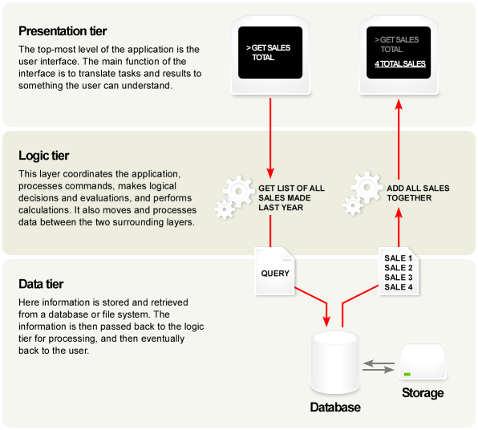
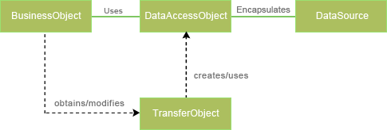

1. Connectors JDBC
Els connectors JDBC permeten utilitzar les bases de dades dels fabricants més importants des de les nostres aplicacions Java.
Un connector JDBC està pensat per a només una família de base de dades. Així doncs, existeix un connector JDBC per a MySQL, un altre per Oracle, un altre per a Microsoft SQL Server, etc.
En aquest tema farem proves connectant contra una base de dades MySQL local. S’assumeix disposar del MySQL correctament instal·lat i operatiu.
És responsabilitat del programador descarregar el connector JDBC que s’apliqui a la seva versió de Java i instal·lar-la apropiadament o fer ús de la configuració per defecte en casos com les distribucions de Linux.
En concret, si s’utilitza una distribució Ubuntu moderna (les proves presentades aquí estan fetes amb Ubuntu >11.10, amb openjdk versió 6 o 7), podrem instal·lar el connector JDBC per a MySQL simplement escrivint:
$ sudo aptitude install libmysql-javaQuan disposem del connector ja instal·lat, l’única diferència respecte a la compilació i execució de programes Java és que, quan executem el programa, si el connector no està copiat al directori de treball, hem d’especificar-lo en la ruta de cerca CLASSPATH. En el cas particular, podrem escriure:
$ javac LlistatPersones.java
$ java -cp .:/usr/share/mysql-connector-java.jar LlistatPersonesCom es veu, l’especificació amb el modificador -cp permet indicar el directori actual (.) i la ubicació de l’arxiu comprimit mysql-connector-java.jar que està en un directori del sistema, separant els camins amb el caràcter “:”.
2. Ús dels connectors
Els connectors JDBC requereixen d’un seguit de passos pràctics a l’hora d’usar-se en Java:
Invocar la recerca de la classe relacionada amb el connector. Això es fa amb una crida com la següent:
Class.forName( "com.mysql.jdbc.Driver" );Això dependrà, lògicament, del connector específic que estiguem utilitzant.
Aquest pas podria generar una excepció de classe no trobada que ha de ser atesa.
Obtenir una connexió amb el servidor, utilitzant les credencials adients. Això sol fer-se escrivint una línia com la següent:
String url = Connection conn = DriverManager.getConnection( "jdbc:mysql://localhost/hr", "hr_user", "hr_pass" );Com veu, el primer paràmetre de la crida a la funció conté el nom del servidor (o la IP) i el nom de la base de dades. Després s’indicaran l’usuari i la contrasenya en els altres dos arguments de la crida.
Aquest pas podria generar una excepció d’impossible contactar que ha de ser atesa.
Un cop tenim una connexió establerta, podem utilitzar-la per a realitzar una consulta. Només cal definir un
Statementi executar-lo:String sql = "SELECT * FROM employees"; Statement stmt = conn.createStatement(); ResultSet rs = stmt.executeQuery( sql );L’objecte
ResultSetobtingut permetrà recórrer les files de resultat de la consulta executada, així com modificar valors en la taula original, si la consulta és senzilla.També podem executar ordres SQL d’execució (no consultes) que no generaran taules de resultat. Aquí tindrem ordres SQL com
UPDATE,INSERT,DELETE,CREATE TABLE, etc. Per invocar aquest tipus d’ordre SQL només cal fer:String sql = "UPDATE employees SET salary=12345 WHERE employeeId=103"; Statement stmt = conn.createStatement(); stmt.execute( sql );S’hauran d’atendre les possibles excepcions de tipus
java.sql.SQLExceptionque s’hi puguin produir.Un cop hem realitzat totes les tasques necessàries amb una consulta, hem d’alliberar (tancar) la consulta:
rs.close(); // Si és una consulta SELECT stmt.close();I quan hem acabat de realitzar totes les tasques amb la base de dades, podrem tancar la connexió establerta amb ella:
conn.close();
3. Sobre els ResultSet
Quan invoquem una consulta SQL que demani un bolcat de dades (consultes tipus SELECT), hem vist que hem d’invocar el mètode Statement.executeQuery(...).
Aquest mètode ens retorna un objecte de tipus ResultSet que contindrà la taula de resultats de la consulta.
Per recórrer aquesta taula, ho farem línia a línia (fila a fila), mitjançant una estructura clàssica com la següent:
...
ResultSet rs = stmt.executeQuery( sql );
while( rs.next() ) {
int id = rs.getInt("employeeId");
String nom = rs.getString("firstname");
String cognoms = rs.getString("lastname");
System.out.println( id + ": " + cognoms + ", " + nom );
}
rs.close();
...Observi que es fa ús de la funció ResultSet.next() per anar recorrent tota la taula de resultats. Amb la fila activa, podem extreure els valors de les columnes fent crides a les funcions ResultSet.getInt(...) o ResultSet.getString(...).
Existeix tota una col·lecció de funcions en la classe ResultSet que permet recórrer verticalment la taula (moure’s entre les files) com first(), last(), etc.
De la mateixa manera existeix tota una col·lecció de mètodes per obtenir les dades en diferents tipus: getInt(), getString(), getDate(), etc.
Independentment, també podem modificar els valors de la taula resultant. Això s’analitzarà en un exemple posterior. I és que existeixen mètodes com setInt() o setString() i la funció updateRow() que actualitza la taula en la base de dades original. Amb tot, per utilitzar aquesta funcionalitat, s’ha d’especificar que aquesta consulta sigui de tipus actualitzable.
4. Execució de consultes de modificació de dades (DML)
Per al cas d’executar ordres SQL de manipulació de dades (les que s’anomenen comunament DML), en comptes de fer servir el mètode Statement.executeSQL(...), farem servir Statement.execute(...).
Observi ara l’exemple de curs número 1.
5. Modificació de dades des de consulta UPDATABLE
Podem modificar les dades directament sobre una consulta de tipus SELECT i després demanar que les dades modificades s’incorporin a l’origen de dades (la taula original). Això permet agilitzar l’accés i modificació de les dades des del programa, sense haver d’executar ordres SQL diverses per a cada operació.
Per aconseguir-ho hem de realitzar una consulta estàndard de selecció (SELECT), però marcar la consulta com a actualitzable. Aleshores executem la consulta normalment i rebem el resultat del SELECT en un objecte ResultSet com abans.
La diferència és que mentre recorrem la taula de dades obtinguda, podem executar mètodes de modificació d’aquestes dades amb crides a ResultSet.updateInt(...) o ResultSet.updateString(...), per exemple.
Un cop hem realitzat totes les modificacions que necessitem, simplement executarem ResultSet.updateRow() per enregistrar els canvis de la fila modificada en la taula original de la base de dades:
...
String sql = "SELECT * FROM employees";
Statement stmt = conn.createStatement( ResultSet.TYPE_SCROLL_INSENSITIVE,
ResultSet.CONCUR_UPDATABLE );
ResultSet rs = stmt.executeQuery( sql );
while( rs.next() ) {
float salary = rs.getFloat( "salary" );
if ( salary < 10000 ) salary *= 1.03;
else salary *= 1.035;
rs.updateFloat( "salary", salary );
rs.updateRow();
}
rs.close();
stmt.close();
...Els canvis són incorporats immediatament a la base de dades i són accessibles a posteriors consultes de selecció.
6. Preparació de consultes amb prepareStatement()
Podem configurar consultes parametritzades de qualsevol tipus (selecció, DML, etc.), és a dir, construir consultes que reben dades provinents de variables de Java que incorporem a la sentència.
Per fer-ho, Java ens ofereix la classe PreparedStatement que funciona exactament igual que Statement des del punt de vista de l’execució de sentències SQL, però que accepta la parametrització de la consulta.
Observi el següent exemple:
PreparedStatement pstmt = conn.prepareStatement(
"SELECT COUNT(*) AS total FROM employees WHERE firstname=? AND lastname=?" );
pstmt.setString( 1, firstname );
pstmt.setString( 2, lastname );
ResultSet rs = pstmt.executeQuery();
...Veurà que la consulta SQL, ara construïda sobre un objecte de tipus PreparedStatement i obtinguda amb una crida a Connection.prepareStatement(...), rep una cadena SQL convencional on s’han omès l’usuari i la contrasenya, i s’ha escrit en el seu lloc un caràcter ?. Observi que tampoc hi ha cometes simples ni dobles encerclant l’interrogant.
Després es canvien els interrogants fent crides a PreparedStatement.setString(...) per modificar les dades en les posicions 1 i 2 (així és com fem referència als interrogants).
7. Extracció de les metadates de la consulta
Tota consulta, un cop executada, genera un objecte ResultSet amb les dades obtingudes. Però si necessitem saber quantes columnes hem obtingut i quins són els seus tipus de dada, haurem d’accedir al que s’anomena les metadates del ResultSet.
Per obtenir les metadates, simplement haurem d’executar una crida a la funció ResultSet.getMetaData() sobre el ResultSet obtingut de la consulta i obtindrem un objecte ResultSetMetaData amb la informació:
ResultSetMetaData rsmd = rs.getMetaData();Amb aquest objecte podem descobrir moltes característiques relacionades amb les columnes obtingudes en aquell ResultSet:
- Amb
ResultSetMetaData.getColumnCount()obtindrem la quantitat de columnes obtingudes - Amb
ResultSetMetaData.getColumnName(idx)obtindrem el nom (o àlies) associat a la columna indicada numèricament. I tingui present que comença a comptar a partir de 1. - Amb
ResultSetMetaData.getColumnDisplaySize(idx)obtindrem la mida màxima de totes les dades d’aquella columna, permetent, per exemple, saber l’amplada de columna que s’haurà de deixar per pantalla per mostrar tota la taula correctament. - Amb
ResultSetMetaData.getColumnTypeName(idx)obtindrem el tipus de dada de la columna demanada, sent normalment cadenes en nomenclatura MySQL: “INTEGER”, “DATE”, “CHAR”, etc.
Observi ara l’exemple de curs número 2.
Si investiga el codi font, veurà que s’ha incorporat la decisió de justificar a esquerra o dreta el text obtingut a partir del tipus de dada de cada columna, i mitjançant crides a les funcions padLeft() i padRight() definides al programa.
8. DAO (Components d’accés a dades)
Un component d’accés a dades (DAO, Data Access Object) és un mecanisme de disseny de software àmpliament utilitzat en el desenvolupament de programari.
Parteix de la idea que, en realitat, quan volem disposar de diferents objectes que es vinculin amb orígens de dades, poden existir múltiples mecanismes de persistència.
Veurem més endavant que JPA (Java Persistence API) ens proveeix d’un mecanisme apte per a realitzar l’abstracció de classes POJO cap a un motor de dades determinat. I fins i tot utilitzarem Hibernate com a intermediari per a construir aplicacions sobre JPA.
Hibernate ens oferirà el mecanisme ideal per al disseny d’una aplicació que connecti contra un motor de base de dades específic, i construïrem l’aplicació en funció del motor triat. Bé, en tot cas configurem Hibernate per treballar amb l’origen de dades específic (nom del servidor de base de dades, port de servei, nom d’usuari, contrasenya).
A més, hem de disposar d’un connector JDBC específic per al motor concret que utilitzem.
Tot aquest castell de cartes és útil i funciona, però no és l’únic patró de disseny que es fa en l’actualitat.
8.1. Arquitectura n-tier (programació per capes)
En l’àmbit de l’enginyeria del software, l’arquitectura multi-capa (multi-tier architecture) (també coneguda com a “arquitectura n-tier” és un arquitectura de disseny de programació que consta de tres capes o elements separats des del punt de vista lògic.
L’arquitectura més habitual és la de tres capes (3-tier):
- Presentació (presentation layer)
- Processament de l’aplicació, també coneguda com a capa de lògica de negoci (logical/business layer)
- Funcions de manipulació de dades (data layer)
Aquesta arquitectura de disseny ens permet construir aplicacions on cadascun dels elements pugui ser desenvolupat separadament, o substituït completament, sense haver de modificar res de cap de les altres capes. Per exemple, en cas d’un canvi de sistema operatiu només caldrà adequar la capa de presentació, o si es canvia el sistema d’emmagatzematge de dades només s’haurà de canviar la capa de dades.
L’estructura de tres capes va ser desenvolupada originàriament per John J. Donovan en Open Environment Corporation (OEC) a Cambridge, Massachusetts.

8.2. Capa de presentació (Presentation tier)
És la capa més alta de l’aplicació. Mostra la informació a l’usuari com a resultat de les accions que realitza i les dades que demana. Comunica amb la capa de lògica de negoci com a resposta de les accions dels usuaris.
Comunament serà una pàgina web o la pantalla principal i els formularis secundaris d’una aplicació de plataforma.
8.3. Capa de lògica de negoci (Logical/Business tier)
Aquesta capa controla realment la funcionalitat de l’aplicació, realitzar el processament detallat de les accions demanades per l’usuari a la capa de presentació, enviant o rebent dades de la capa de dades situada per sota.
8.4. Capa de dades (Data tier)
Aquesta capa consisteix en la connexió amb els servidors de bases de dades i/o orígens d’informació i dades. Aquí és on s’obté i processa la informació. Aquesta capa manté les dades d’una manera neutral i independent de l’aplicació i la lògica de l’aplicació.
Fer aquesta separació permet l’escalabilitat i la millora de l’eficiència de les aplicacions, a més de permetre l’existència (i potser coexistència simultània) de diversos orígens de dades.
8.5. Comparació amb l’arquitectura MVC
L’arquitectura MVC (Model-View-Controller) és un model de tres capes semblant al presentat fins ara, però que incorpora una petita diferència: en el cas de MVC, la comunicació entre capes pot realitzar-se directament entre la capa de dades (model) i la de presentació (vista); mentre que en el cas 3-tier, no és permesa la comunicació entre dades i presentació (sempre s’ha de passar a través de la capa de processament).
8.6. Concepte de DAO
Evidentment no és temari d’aquest tema (ni d’aquest curs com a conjunt) parlar de les capes de presentació i de processament. Del que sí hem de parlar és de la capa d’accés a dades (DAL, Data Access Layer).
Aquesta capa, tal i com s’ha esmentat, és l’encarregada de la persistència de dades en els medis i amb els mitjans requerits i/o disponibles per al correcte funcionament de l’aplicació.
Això es desglossa en diversos tipus d’implementació que dependran del model de dades triat. Aquests models poden ser combinats i en poden haver més d’un en una mateixa aplicació.
Els models de dades més utilitzats avui dia són:
- Fitxers de disc, amb formats estàndard coneguts i/o propietaris
- Dades residents en bases de dades relacionals
- Dades residents en bases de dades orientades a objectes
- Documents residents en una bases de dades natives XML
La metodologia utilitzada comunament per implementar la capa d’accés a dades (DAL) és la de construir una col·lecció d’objectes (tot sovint a través d’interfícies) que representin objectes que permetin accedir a la informació ubicada en aquells dipòsits d’informació.
Aquests objectes, coneguts com a objectes d’accés a dades (DAO, Data Access Objects), són en realitat l’objectiu d’aquesta unitat formativa.
Un DAO és un objecte POJO que representa una unitat d’informació tancada des d’un punt de vista conceptual, i que implementa les operacions CRUD a més d’altres mètodes més específics d’objecte específic.
Les operacions CRUD són les habituals de tot element d’informació: Create, Read, Update i Delete (crear, llegir, editar i eliminar).
En una aplicació, hi ha tants DAO com models. És a dir, en una base de dades relacional, per cada taula haurà un DAO associat (tot i que un sol DAO pot cobrir més d’una taula o entitat).
L’avantatge d’usar DAO és la separació senzilla però rigorosa entre les parts d’una aplicació que preferiblement haurien de ser independents unes d’altres, i que poden evolucionar o canviar separadament. Així doncs, es podria canviar la lògica de negoci d’una aplicació sense tocar ni una sola línia de codi de les interfícies DAO, i viceversa. Igual respecte a la capa de presentació.
Els seus grans avantatges són:
- Pot ser usat en un gran nombre d’aplicacions, allà on es requereixi d’un magatzem d’informació.
- Amaguen els detalls de la implementació de l’emmagatzematge de la resta de l’aplicació.
- Actuen com a intermediari entre l’aplicació i la base de dades. Mouen dades entre els objectes i els orígens d’informació.
- Permeten que els canvis en els mecanismes de persistència no afectin moltes àrees de l’aplicació.
Des del punt de vista específica del llenguatge Java, els DAO poden implementar-se de moltes maneres: des de simples interfícies que separen l’accés a dades de la lògica de l’aplicació; fins a llibreries i productes comercials: JPA, JDO, Enterprise Java Beans (J2EE), TopLink, Doctrine, Hibernate, iBATIS, Apache OpenJPA, etc.
L’ús de DAO en entorns Java hauria de comportar:
- Un augment de l’eficiència i rendiment de la capa de dades, perquè ara es torna reutilitzable, i
- Capacitat de modificar els DAO sense alterar altres parts de l’aplicació.
De vegades necessitarem també dels DTO (Data Transfer Object), també denominats VO (Value Object). Són utilitzats pels DAO per a transportar les dades des de la base de dades fins a la capa de lògica de negoci i viceversa. Malgrat això, normalment són els mateixos DAO que són moguts des de i cap a la capa de lògica.
El patró de disseny DAO consisteix en algunes classes factoria, interfícies DAO i algunes classes DAO que implementin aquelles interfícies:

Els DAO són els objectes primaris d’aquest patró de disseny. Aquest objecte abstreu la implementació d’accés a dades dels altres objectes per habilitar l’accés transparent a la base de dades o unitat d’emmagatzematge.
Observi ara l’exemple de curs número 3.
9. Problemàtica del JDBC
Què passa si, mitjançant l’exemple número 3, intenta aplicar el procés de canvi de sou al treballador amb employeeId=100?
La solució és fer que els POJO no facin referència als id d’altres taules, sinó que les referències entre taules es resolguin directament a objectes de les classes associades.
Així doncs, el POJO Employee hauria de ser així:
public class Employee {
int employeeId;
String firstname;
String lastname;
String email;
String phoneINT;
Date hireDate;
Job job;
float salary;
float commissionPct;
Employee manager;
Department department;
...
}Observi que ara aquells camps que són clau forana a altres taules han estat substituïts per objectes referenciats adecuadament des d’aquest. Així, si tenim un determinat treballador e1, si apliquem e1.getDepartment() el que obtindríem seria tot un objecte de la classe Department amb què podrem treballar normalment.
Aquesta idea, que resulta evident ara que ha estat presentada, incorpora una gran problemàtica si intenta dur-se a terme amb simples consultes SQL a través de JDBC. Els motius són diversos:
- Hauríem de mantenir en memòria gran part (o tota) la base de dades, perquè un treballador tindrà un cap, que al seu torn tindrà un altre, etc. El mateix amb la resta d’elements de la base de dades.
- Hem d’escriure moltíssimes línies de codi per obtenir pocs (o cap) avantatges només per tenir els objectes en memòria.
- Un canvi en les dades no és reflectit en la base de dades de cap manera. Hauríem de programar una funció que bolqués les dades de nou a la taula atenent als canvis que s’hi descobreixin, fent també el programa molt més complex i llarg.
- Les dades quedaran desactualitzades si la base de dades canvia la informació de les taules degut a l’execució d’ordres SQL provinents d’altres programes i/o usuaris concurrents. Això no podem atacar-ho d’una manera neta i definitiva, sent un greu problema en el disseny de la base de dades i el seu ús.
Per tant, fora de programes que accedeixen a la informació de manera immediata, realitzen llistats o executen ordres SQL de gestió de la informació, l’ús de JDBC queda lluny de ser solució en una manipulació intensiva i continuada de les dades de la base de dades, on el programa hagi d’accedir a blocs d’informació amplis i treballar en paral·lel amb multitud de taules i usuaris concurrents.
Veurem, com a solució, altres tècniques al llarg d’aquest curs. Bàsicament mitjançat JPA i Hibernate.